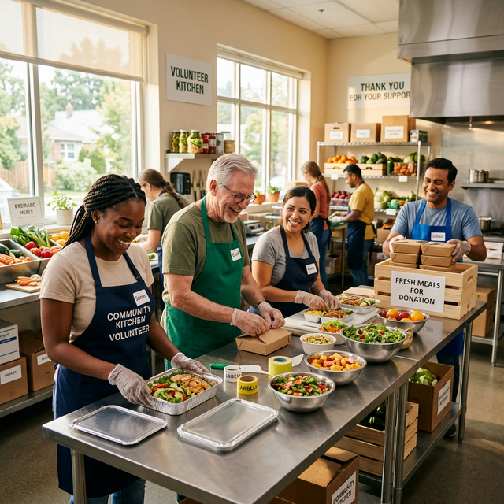
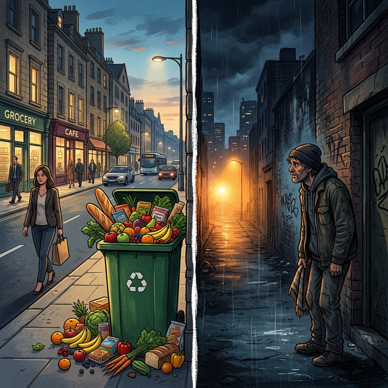
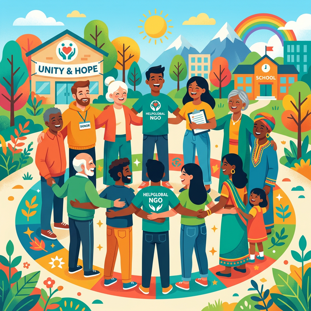

Connecting Surplus Food with Communities in Need
Bridge of Hope is more than just a platform; it's a movement aimed at eradicating food waste and hunger. We bridge the gap between donors with excess food and trusted NGOs who serve the most vulnerable sections of our society.

The Silent Crisis
Each year, millions of tons of perfectly good food are wasted in cities, while thousands of children and families go to sleep on empty plates. This paradox of waste amidst want is the challenge we tackle every day.
In urban areas, restaurants, event halls, and households often have surplus food that is simply discarded because there is no efficient way to transport it to those who truly need it.

The Bridge of Hope Solution
A seamless digital ecosystem that makes food donation fast, reliable, and transparent.
Simple Donation
Donors can list their surplus food in seconds through our mobile-friendly interface.
Verified Network
We only partner with registered and verified NGOs to ensure food reaches the right hands.
Real-time Tracking
Donors can see exactly when their food is picked up and delivered to the NGO.
How It Works
Three simple steps to make a massive impact in your community.
Donor Submits Details
Donor enters food type, quantity, and pickup location on our platform.
Trust Accepts Request
A nearby verified trust receives a notification and accepts the donation request.
Collected & Distributed
The trust collects the food from the donor and distributes it to those in need.
Our Mission
Connecting surplus food with trusted NGOs to reduce waste and provide dignified meals to every individual in need.
Our Vision
A future where no good food is wasted and no one goes hungry—creating a zero-waste, zero-hunger world.
Who We Serve
We work tirelessly to support various groups through our dedicated NGO partners.
Orphanages
Ensuring children in shelters receive nutritious, fresh meals for healthy growth.
Old Age Homes
Providing consistent food support to elderly citizens who deserve a dignified life.
Homeless Shelters
Reaching out to street outreach programs and temporary shelters across the city.
0
Meals Shared
0
Registered Trusts
0
Active Donors
0
Cities Covered
Be the Reason Someone Smiles Today
Whether you are an individual with extra food from a party or a restaurant with daily surplus, your contribution can change lives. Join our growing community of heroes.
